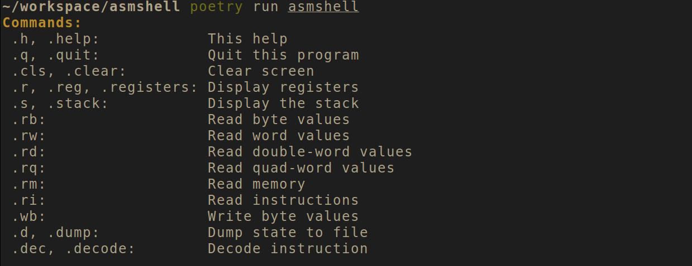
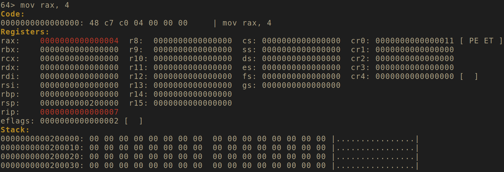
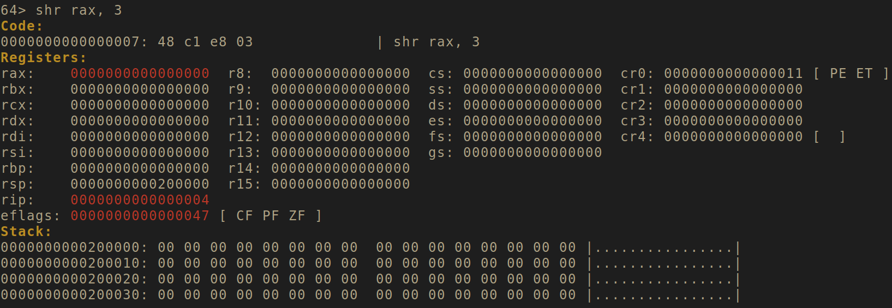
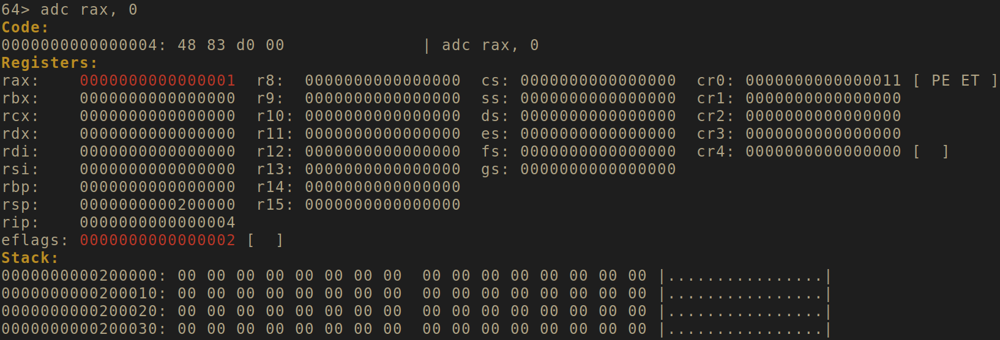
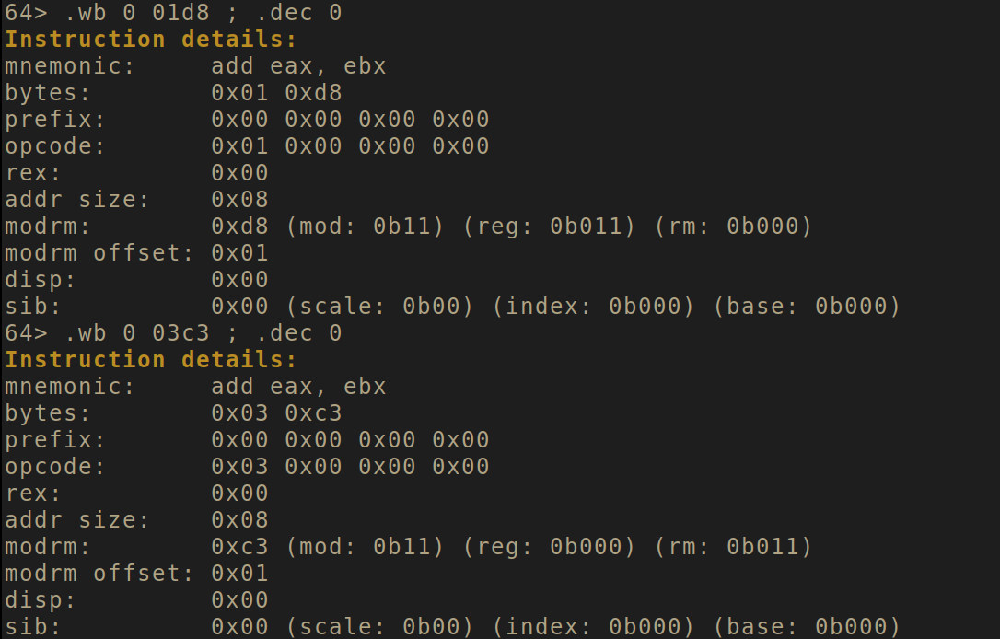
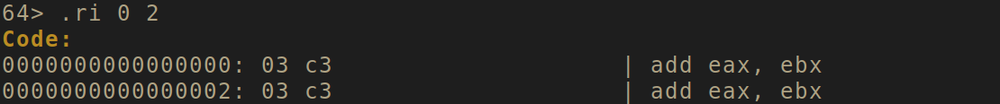

ASMShell - x86_64 REPL
A Python x86_64 REPL based on keystone + unicorn + capstone.
Usage Link to heading
You can launch the asmshell in 32 or 64-bit mode. From there, you can directly
type assembly in the prompt or access some internal commands as listed below (or under the .help command):

Write code, observe side effects Link to heading
When you launch asmshell, you can type assembly and get a quick glance at what
you’re doing. The following example is fetched from the the xorpd’s xchg rax,rax
snippet 0x09.
We set an initial value to rax.

We divide rax by 8.

And add the carry.

The range from 0 to 3 gives a 0 and the range 4 to 7 gives a 1. The asmshell gives you the opportunity to quickly setup neat asm tricks.
Additional commands Link to heading
The asmshell provides some additional commands so you have full on the bytecode.
Here, I’m writing some bytes using the .wb command and I ask the instruction
decomposition using the .dec command:

Here, I’m printing two instructions from address zero using the .ri command:

Download Link to heading
Get a copy with additional instructions of asmshell at github.com/valkheim/asmshell.